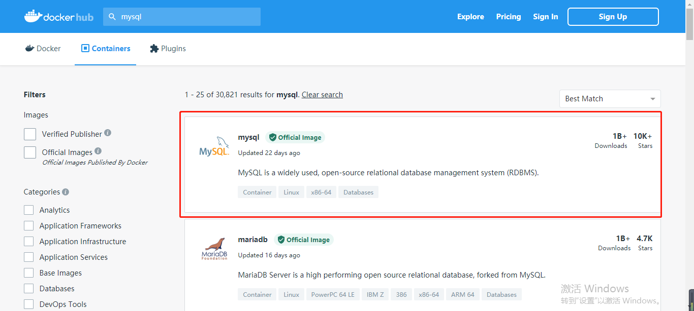
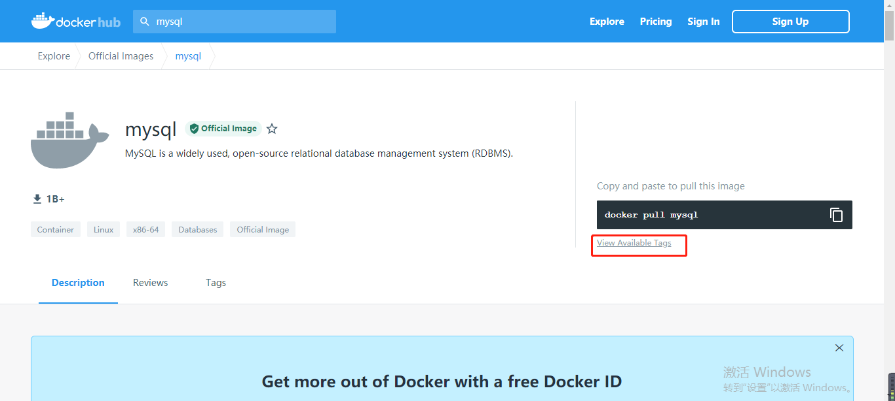
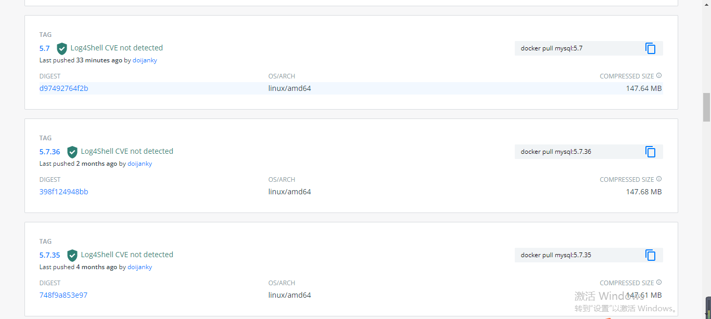
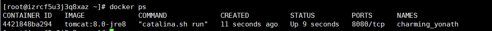

Docker的几个概念
镜像
镜像就是一个只读的模板，镜像可以用来创建 Docker 容器，一个镜像可以创建多个容器
容器
容器是用镜像创建的运行实例，Docker 利用容器独立运行一个或一组应用。它可以被启动、开始、停止、删除，每个容器都是相互隔离的、保证安全的平台。可以把容器看作是一个简易的 Linux 环境和运行在其中的应用程序。容器的定义和镜像几乎一模一样，也是一堆层的统一视角，唯一区别在于容器的最上面那一层是可读可写的
仓库
仓库是集中存放镜像文件的场所。仓库和仓库注册服务器是有区别的，仓库注册服务器上往往存放着多个仓库，每个仓库中又包含了多个镜像，每个镜像有不同的标签。仓库分为公开仓库和私有仓库两种形式，最大的公开仓库是 DockerHub，存放了数量庞大的镜像供用户下载，国内的公开仓库有阿里云、网易云等
总结
通俗点说，一个镜像就代表一个软件；而基于某个镜像运行就是生成一个程序实例，这个程序实例就是容器；而仓库是用来存储 Docker 中所有镜像的。
其中仓库又分为远程仓库和本地仓库，和 Maven 类似，倘若每次都从远程下载依赖，则会大大降低效率，为此，Maven 的策略是第一次访问依赖时，将其下载到本地仓库，第二次、第三次使用时直接用本地仓库的依赖即可，Docker 的远程仓库和本地仓库的作用也是类似的。
安装Docker
这里以Centos7为例
在测试或开发环境中，Docker 官方为了简化安装流程，提供了一套便捷的安装脚本，执行这个脚本后就会自动地将一切准备工作做好，并且把 Docker 的稳定版本安装在系统中。
1 | curl -fsSL get.docker.com -o get-docker.sh |
安装完成后直接启动服务：
1 | systemctl start docker |
推荐设置开机自启，执行指令：
1 | systemctl enable docker |
Docker初体验
Docker 提供了一个 DockerHub 用于查询各种镜像的地址和安装教程 DockerHub： https://hub.docker.com/，这里安装一下Mysql镜像
在左上角的搜索框中输入MySQL并回车：

可以看到相关 MySQL 的镜像非常多，若右上角有OFFICIAL IMAGE标识，则说明是官方镜像，所以我们点击第一个 MySQL 镜像：

右边提供了下载 MySQL 镜像的指令为docker pull MySQL，但该指令始终会下载 MySQL 镜像的最新版本。
若是想下载指定版本的镜像，则点击下面的View Available Tags：

这里就可以看到各种版本的镜像，右边有下载的指令，所以若是想下载 5.7.32 版本的 MySQL 镜像，则执行：
1 | docker pull MySQL:5.7.32 |
Docker 镜像指令
Docker 需要频繁地操作相关的镜像，所以我们先来了解一下 Docker 中的镜像指令。
若想查看 Docker 中当前拥有哪些镜像，则可以使用 docker images 命令。
1 | [root@izrcf5u3j3q8xaz ~]# docker images |
其中REPOSITORY为镜像名，TAG为版本标志，IMAGE ID为镜像 id(唯一的)，CREATED为创建时间，注意这个时间并不是我们将镜像下载到 Docker 中的时间，而是镜像创建者创建的时间，SIZE为镜像大小。
该指令能够查询指定镜像名：
1 | docker image MySQL |
若如此做，则会查询出 Docker 中的所有 MySQL 镜像：
1 | [root@izrcf5u3j3q8xaz ~]# docker images MySQL |
该指令还能够携带-p参数：docker images -q ， -q表示仅显示镜像的 id：
1 | [root@izrcf5u3j3q8xaz ~]# docker images -q |
若是要下载镜像，则使用：
1 | docker pull MySQL:5.7 |
docker pull是固定的，后面写上需要下载的镜像名及版本标志；若是不写版本标志，而是直接执行docker pull MySQL，则会下载镜像的最新版本。
一般在下载镜像前我们需要搜索一下镜像有哪些版本才能对指定版本进行下载，使用指令：
1 | docker search MySQL |
不过该指令只能查看 MySQL 相关的镜像信息，而不能知道有哪些版本，若想知道版本，则只能这样查询：
1 | docker search MySQL:5.5 |
若是查询的版本不存在，则结果为空：
删除镜像使用指令：
1 | docker image rm MySQL:5.5 |
若是不指定版本，则默认删除的也是最新版本。
还可以通过指定镜像 id 进行删除：
1 | docker image rm bf756fb1ae65 |
然而此时报错了：
1 | [root@izrcf5u3j3q8xaz ~]# docker image rm bf756fb1ae65 |
这是因为要删除的hello-world镜像正在运行中，所以无法删除镜像，此时需要强制执行删除：
1 | docker image rm -f bf756fb1ae65 |
该指令会将镜像和通过该镜像执行的容器全部删除，谨慎使用。
上传镜像
语法：**docker push **[OPTIONS] NAME[:TAG]
1 | docker push myapache:v1 # 上传本地镜像myapache:v1到镜像仓库中。 |
OPTIONS：参数选项[**–disable-content-trust **:忽略镜像的校验,默认开启]
构建镜像
使用 Dockerfile 创建镜像。
语法：docker build [OPTIONS] PATH | **URL **
1 | docker build -t runoob/ubuntu:v1 # 用当前目录的 Dockerfile 创建镜像，标签为runoob/ubuntu:v1 |
OPTIONS:[-t: 镜像的名字及标签,通常 name:tag 或者 name 格式；可在一次构建中为一个镜像设置多个标签，**-f :**指定要使用的Dockerfile路径]
打包镜像
语法：docker save [OPTIONS] IMAGE [IMAGE…]
1 | docker save -o my_ubuntu_v3.tar ubuntu:v3 #将镜像ubuntu:v3 生成my_ubuntu_v3.tar |
OPTIONS :[**-o :**输出到的文件]
导入镜像
语法：docker load [OPTIONS]
1 | docker load < busybox.tar.gz |
OPTIONS :[-i : 指定导入的文件，代替 STDIN;-q : 精简输出信息]
Docker 容器指令
掌握了镜像的相关指令之后，我们需要了解一下容器的指令，容器是基于镜像的。
容器的运行
语法：docker run [OPTIONS] IMAGE [COMMAND]
1 | docker run -d nginx # 后台模式启动一个容器 |
OPTIONS说明：
-d: 后台运行容器，并返回容器ID；
-i: 以交互模式运行容器，通常与 -t 同时使用；
-P: 随机端口映射，容器内部端口随机映射到主机的端口
-p: 指定端口映射，格式为：主机(宿主)端口:容器端口
-t: 为容器重新分配一个伪输入终端，通常与 -i 同时使用；
–name=”nginx-lb”: 为容器指定一个名称；
–dns 8.8.8.8 : 指定容器使用的DNS服务器，默认和宿主一致；
–dns-search example.com : 指定容器DNS搜索域名，默认和宿主一致；
-h “mars” : 指定容器的hostname；
-e username=”ritchie” : 设置环境变量；
–env-file=[] : 从指定文件读入环境变量；
–cpuset=”0-2” or –cpuset=”0,1,2”: 绑定容器到指定CPU运行；
**-m :**设置容器使用内存最大值；
–net=”bridge”: 指定容器的网络连接类型，支持 bridge/host/none/container: 四种类型；
–link=[]: 添加链接到另一个容器；
–expose=[]: 开放一个端口或一组端口；
–volume , -v: 绑定一个卷
若需要通过镜像运行一个容器，则使用：
1 | docker run tomcat:8.0-jre8 |
当然了，运行的前提是你拥有这个镜像，所以先下载镜像：
1 | docker pull tomcat:8.0-jre8 |
下载完成后就可以运行了，运行后查看一下当前运行的容器：docker ps 。

其中CONTAINER_ID为容器的 id，IMAGE为镜像名，COMMAND为容器内执行的命令，CREATED为容器的创建时间，STATUS为容器的状态，PORTS为容器内服务监听的端口，NAMES为容器的名称。
通过该方式运行的 tomcat 是不能直接被外部访问的，因为容器具有隔离性，若是想直接通过 8080 端口访问容器内部的 tomcat，则需要对宿主机端口与容器内的端口进行映射：
1 | docker run -p 8080:8080 tomcat:8.0-jre8 |
解释一下这两个端口的作用(8080:8080)，第一个 8080 为宿主机端口，第二个 8080 为容器内的端口，外部访问 8080 端口就会通过映射访问容器内的 8080 端口。
此时外部就可以访问 Tomcat 了：
若是这样进行映射：
1 | docker run -p 8088:8080 tomcat:8.0-jre8 |
则外部需访问 8088 端口才能访问 tomcat，需要注意的是，每次运行的容器都是相互独立的，所以同时运行多个 tomcat 容器并不会产生端口的冲突。
容器还能够以后台的方式运行，这样就不会占用终端：
1 | docker run -d -p 8080:8080 tomcat:8.0-jre8 |
启动容器时默认会给容器一个名称，但这个名称其实是可以设置的，使用指令：
1 | docker run -d -p 8080:8080 --name tomcat01 tomcat:8.0-jre8 |
此时的容器名称即为 tomcat01，容器名称必须是唯一的。
再来引申一下docker ps中的几个指令参数，比如-a：
1 | docker ps -a |
该参数会将运行和非运行的容器全部列举出来：
-q参数将只查询正在运行的容器 id：docker ps -q 。
1 | [root@izrcf5u3j3q8xaz ~]# docker ps -q |
若是组合使用，则查询运行和非运行的所有容器 id：docker ps -qa 。
1 | [root@izrcf5u3j3q8xaz ~]# docker ps -aq |
接下来是容器的停止、重启指令，因为非常简单，就不过多介绍了。
1 | docker start c2f5d78c5d1a |
通过该指令能够将已经停止运行的容器运行起来，可以通过容器的 id 启动，也可以通过容器的名称启动。
1 | docker restart c2f5d78c5d1a |
该指令能够重启指定的容器。
1 | docker stop c2f5d78c5d1a |
该指令能够停止指定的容器。
1 | docker kill c2f5d78c5d1a |
该指令能够直接杀死指定的容器。
以上指令都能够通过容器的 id 和容器名称两种方式配合使用。
当容器被停止之后，容器虽然不再运行了，但仍然是存在的，若是想删除它，则使用指令：
1 | docker rm d5b6c177c151 |
需要注意的是容器的 id 无需全部写出来，只需唯一标识即可。
若是想删除正在运行的容器，则需要添加-f参数强制删除：
1 | docker rm -f d5b6c177c151 |
若是想删除所有容器，则可以使用组合指令：
1 | docker rm -f $(docker ps -qa) |
先通过docker ps -qa查询出所有容器的 id，然后通过docker rm -f进行删除。
当容器以后台的方式运行时，我们无法知晓容器的运行状态，若此时需要查看容器的运行日志，则使用指令：
1 | docker logs 289cc00dc5ed |
这样的方式显示的日志并不是实时的，若是想实时显示，需要使用-f参数：
1 | docker logs -f 289cc00dc5ed |
通过-t参数还能够显示日志的时间戳，通常与-f参数联合使用：
1 | docker logs -ft 289cc00dc5ed |
查看容器内运行了哪些进程，可以使用指令：
1 | docker top 289cc00dc5ed |
若是想与容器进行交互，则使用指令：
1 | docker exec -it 289cc00dc5ed bash |
此时终端将会进入容器内部，执行的指令都将在容器中生效，在容器内只能执行一些比较简单的指令，如：ls、cd 等，若是想退出容器终端，重新回到 CentOS 中，则执行exit即可。